01 / NO DATABASE
No database
Sessions are the engine's own JSONL / threads. The web UI reads them, renames them, deletes them — it never keeps a second copy.
The engine keeps running on your own machine. From the browser you watch it work, manage its tools and models, cut in mid-turn — and when you need to, open a file, start a shell, or mark the exact spot on a page that should change. Single user, loopback only, no database: the source of truth stays the engine's own session files.
npm -g install oh-my-agent-web
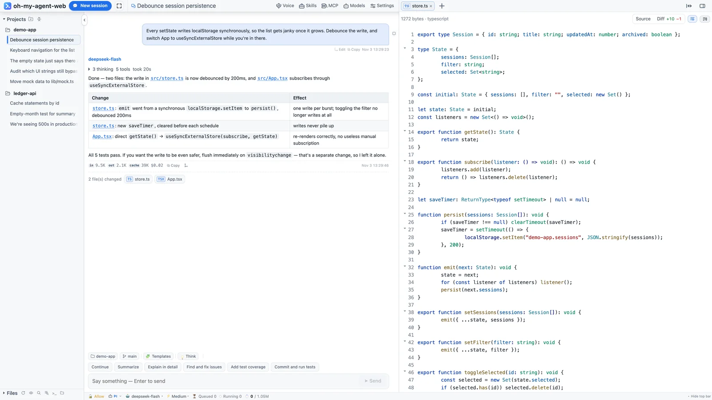
A real session: thinking, tool calls, the diff and usage in one screen.
It doesn't rewrite your prompt and doesn't take over tool implementations — you install pi, Codex, Claude Code or opencode, and the workbench gives them a readable UI, clickable buttons and a session list that lives on disk. Three hard rules shape everything you see.
Sessions are the engine's own JSONL / threads. The web UI reads them, renames them, deletes them — it never keeps a second copy.
If an engine can't do something, the button isn't drawn (capability matrix). If a panel has no data, it says so instead of borrowing another engine's config.
Listens on 127.0.0.1 by default. Remote access means an explicit -H 0.0.0.0 and a password set on the machine itself.
Thinking blocks, tool calls, changed files, tokens and cost all live in the transcript — and the composer stays usable while a turn is running.
Tool cards carry arguments, the full command, output, duration and status. When a turn finishes they fold into one line — “3 thinking · 5 tools · took 20s” — and unfold into the full timeline.
src/App.tsx in prose opens the preview.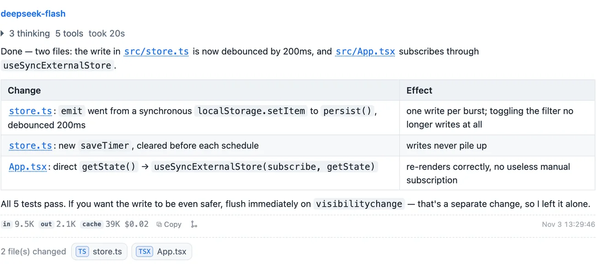
The composer never locks while a turn runs: steer takes effect immediately, queue waits for this turn to end, stop keeps whatever was already produced.
Select any passage and a small toolbar appears: add it to the session, annotate it, or ask about it in a temp chat. The passage keeps a ①②③ badge and the composer grows an “N notes” capsule.
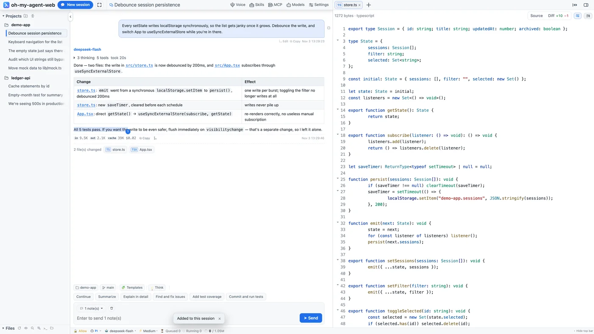
Type @ to search the workspace, ↑↓ to pick, Enter to insert @src/store.ts. Type / for local commands (new, rename, model, session stats) or ones handed straight to the agent (compact, plan mode).
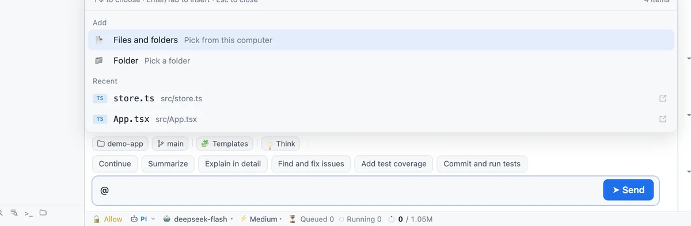
A multi-tab workspace on the right: file preview, diff, a real terminal, an embedded browser and temp chats. The first three are for review; the browser is for development.
Directory tree, search by filename, full-text search (with masks like web/src/**); previews cover markdown, mermaid, images, PDF, audio and video. Switch to “Changes” for a diff against HEAD: a +10 −1 summary, line-level red/green, or changes only.
@src/store.ts:120-138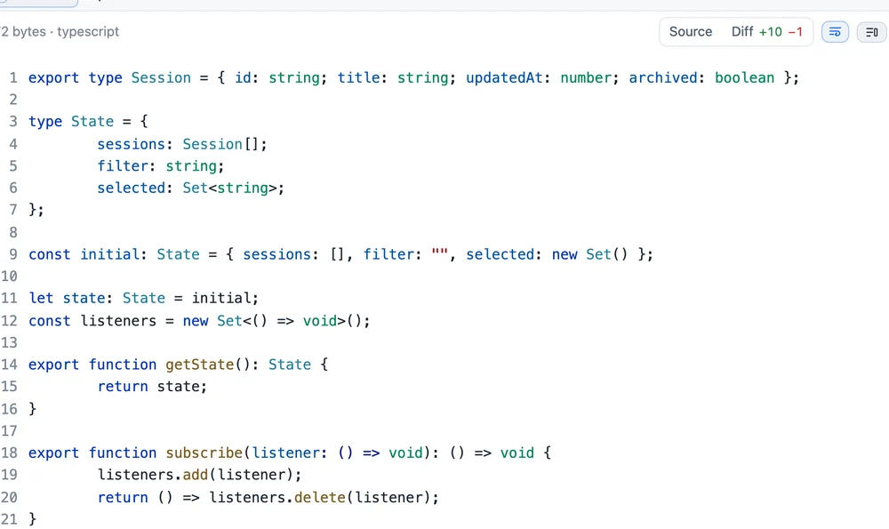
The terminal is a real PTY (node-pty + xterm.js): vim, top, Ctrl-C, colours and line editing all behave, and the cwd follows the session's project. Refreshing the page ends the PTY; switching tabs does not.
Open a local page in the right pane (requests go through a local proxy, cookies stay out). Hit 📍 next to reload to enter pick mode: click the spot that should change, write one line right there, and the page keeps a ①②③ badge. Mark several spots in a row; they all arrive as “N notes”.
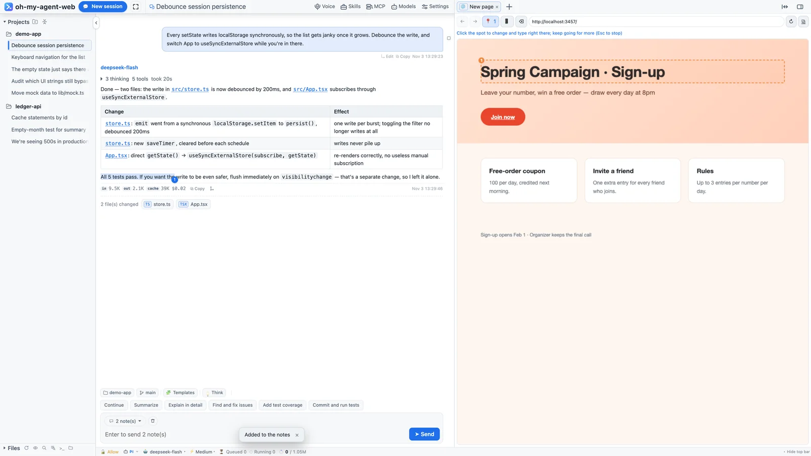
Switch to Codex and these panels read Codex's own data. A panel that isn't wired up says so, instead of showing pi's config.
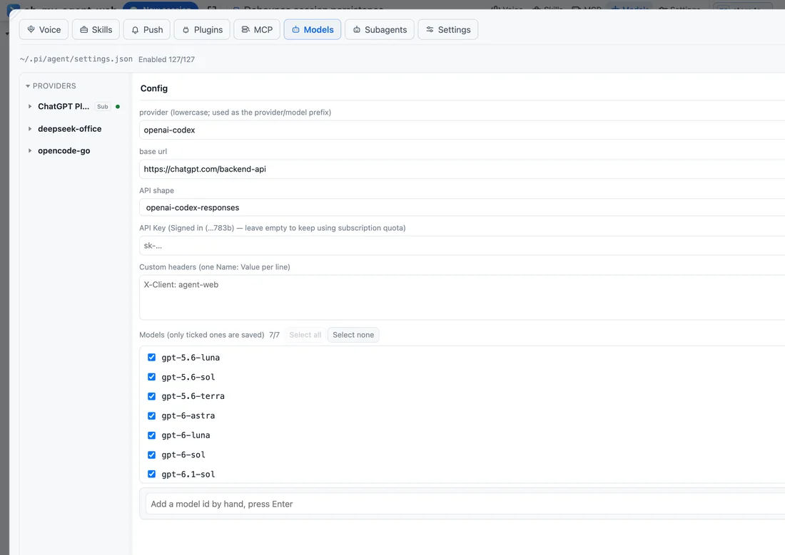
OAuth subscription logins, built-in providers, custom endpoints and API shapes; tick the models you want. Keys never leave the server — only the last 4 characters come back.
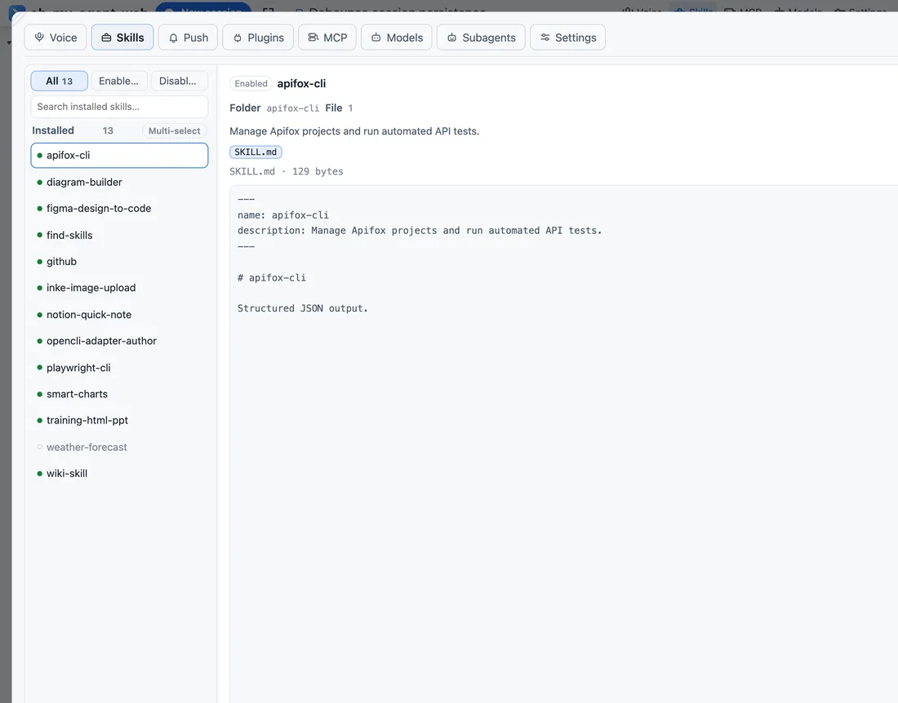
Reads ~/.agents/skills; enabling or disabling renames the file, with no second state file. Skill Hub adds search and one-click install.
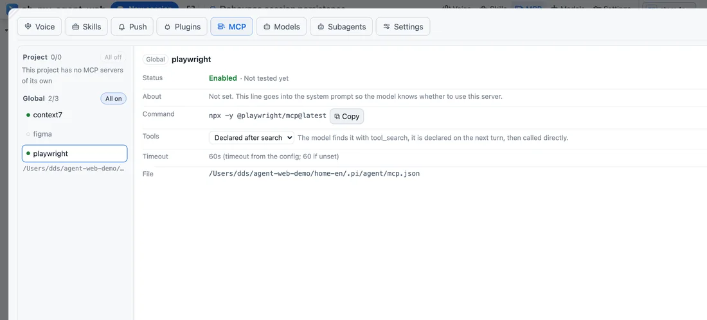
Global and project configs, project entries override; four exposure modes; “Test connection” does a real handshake and reports the tool count.
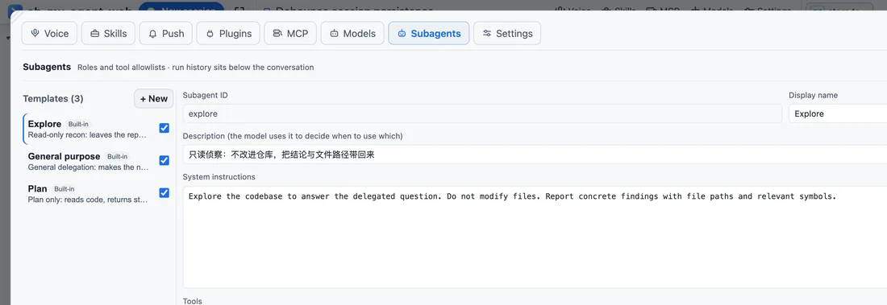
Built-in explore / general-purpose / plan, editable and disableable; concurrency 1–12 with the rest queued. Every subagent is a real session.
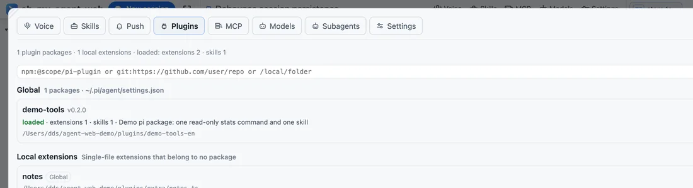
Plugins are pi packages: npm, git or local directories, in four states loaded · installed · missing · disabled. Disabling doesn't delete files.
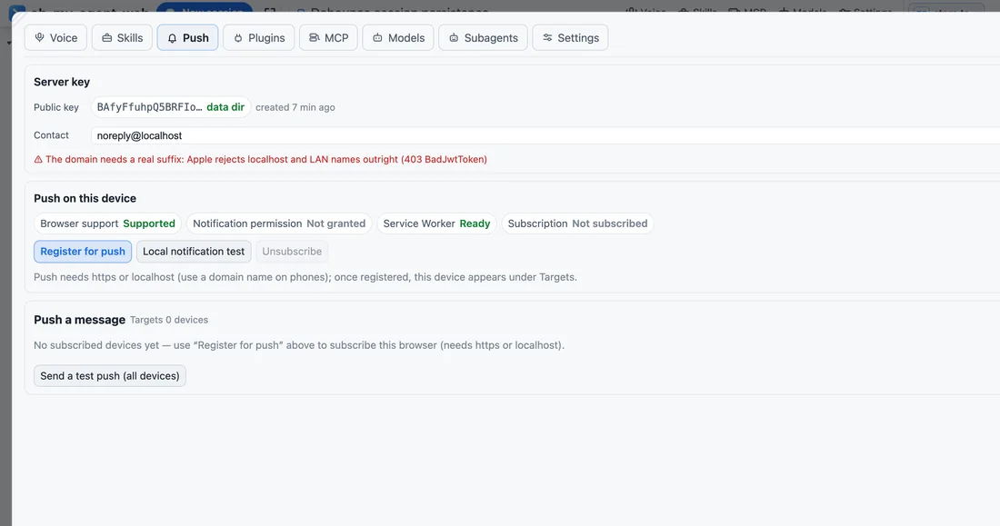
One push when a turn ends (prefixed ❌ on failure, ⏹ on interrupt) that opens the session; four event sounds plus offline local TTS.
Projects and sessions on the left, the transcript in the middle, the workspace on the right, and “how this turn runs” at the bottom. Every entry point can be hidden in settings.
Projects and sessions · transcript · source view · status bar
An engine is not “the same prompt in a different skin”: each is wired to its official loop, and capability differences hide buttons in the UI.
| Capability | pi | codex | dsh | opencode | claude |
|---|---|---|---|---|---|
| Approvals | ✓ | ✓ | ✓ | per config | ✓ |
| Model / thinking level | ✓ | ✓ | ✓ | ✓ | model only |
| Resume history | ✓ | ✓ | ✓ | ✓ | ✓ |
| Steer | ✓ | — | — | — | — |
| Subagent panel | ✓ | — | — | — | — |
| Workbench manages providers | ✓ | — | — | — | — |
| Temp chat (in memory) | ✓ | — | — | — | — |
Requires Node ≥ 22.19. It installs three equivalent commands: oh-my-agent-web, aw and agent-web. On Linux the embedded terminal needs node-pty built locally (make / g++ / python3).
npm -g install oh-my-agent-web, or the one-line script that keeps everything under ~/.oh-my-agent-web without touching system npm.
In your project, run aw: it starts in the foreground and opens the browser, listening only on 127.0.0.1:25257.
Hit “New session” and send the first message. To reach it from a phone or another machine, use -H 0.0.0.0 and set a password under Settings → Remote first.
# install npm -g install oh-my-agent-web # start in your project (foreground + open the browser) cd ~/code/my-proj aw # run detached, check status, stop aw -d aw status aw stop # another port / a specific workspace aw -p 25258 AGENT_WEB_CWD=~/code/my-proj aw
| aw | Foreground, opens the page (Ctrl-C to quit) |
| aw -d | Detached; logs go to daemon.log |
| aw status | pid / port / engine / sessions / workspace |
| aw -H 0.0.0.0 | Allow remote access (set a password first) |
A single-user tool deserves a boundary small enough to explain: who gets in, how, and what happens when they fail.
Loopback peer and loopback Host is let in; any other source is rejected until a password exists.
A remote visitor can't set the first password — otherwise whoever scans the port first owns it. It is stored in the data dir and takes effect immediately.
Attempts and duration are configurable (1–20 tries / 1–1440 minutes). The lock persists across restarts, and Settings shows the login activity.
Read-only tools pass automatically; the rest ask per “tool + target”. “Always allow” writes to approval-rules.json, and a finished turn clears pending approvals.
The iframe sandbox omits allow-same-origin, so remote JS can't reach the workbench's storage or API.
-H 0.0.0.0 lets the outside in; the password keeps people out. Domains, LAN IPs and public IPs are treated the same — no extra allow-list.
Sessions stay in the engine's own directory (pi: ~/.pi/agent/sessions). The workbench only keeps settings.json, the lock file, logs, push subscriptions and local UI preferences. Open it on another device and you see the same session files.
No. It reads the engine's own session files or threads, and only displays, renames or deletes them. It keeps no second database and doesn't touch the engine's prompt or tools.
Not by the workbench. Only the model providers you configure receive requests; there is no relay service in between.
Because it can run commands and read/write files. Listening on 127.0.0.1 means “anyone who can open this page could already operate this machine”. Remote access is an explicit -H plus a password.
Yes. Narrow screens become a single column, the sidebar turns into a drawer, and the composer is 18px so iOS doesn't zoom. For remote use: -H 0.0.0.0 plus a password; push notifications need https (an installed PWA works).
macOS, Linux and Windows. On Linux the embedded terminal needs node-pty compiled in place — install make / g++ / python3, or let the one-line script pass --with-build-tools.
A temp chat is a channel a person opens: nothing is saved, it disappears when closed, and it can be saved as a real conversation. A subagent is a task the agent delegates: it has its own context and session file and reports back.
That's the capability matrix: semantics the current engine doesn't support (say, steering on non-pi engines, or the subagent panel) simply aren't drawn, instead of sending a command that is bound to fail.